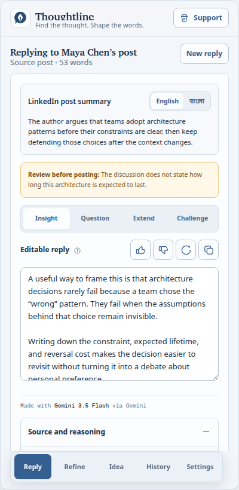
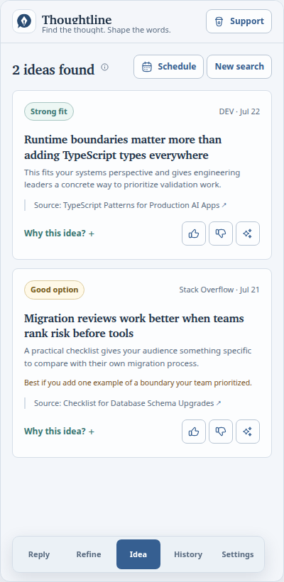
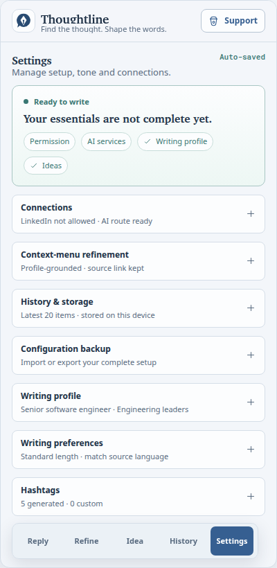

Find the thought.
Shape the words.
Understand the conversation, explore four reply directions, and write in your own voice—without giving up control.
Chrome 120+ · Free and open source · Manual publishing only

Edit, copy, and publish only when it sounds like you.
No auto-posting
No feed scanning
No hidden content
One conversation at a time
A clear path from context to your words.
Thoughtline starts only when you ask. It reads the visible conversation you selected, gives you useful directions, then gets out of the way.
-
1
Choose the context
Right-click what matters.
Select one visible post, comment, or reply. Thoughtline stays inside that boundary.
-
2
Find your angle
Explore four directions.
Add insight, ask a question, extend the idea, or respectfully challenge it.
-
3
Make it yours
Edit, copy, publish.
Refine every word in the side panel. Nothing is published until you do it yourself.


More than replies
Build a writing practice, not a content machine.
Refine rough writing
Paste a draft or reshape a selected post through your confirmed perspective and voice.
Research source-backed ideas
Find promising ideas across public sources, with a link back to every original item.
Keep useful work close
Search, edit, revise, and export local history without turning your work into telemetry.
Made for your voice
“Useful AI should leave you sounding more like yourself, not less.”
Your language
English, Bangla, or naturally matched to the source.
Your guidance
Tone, topics, audience, examples, and an editable style guide.
Your approval
Every draft remains editable and every publish action remains yours.
Boundaries are a feature
Private by design. Limited on purpose.
Thoughtline is intentionally not a bot. It analyzes only what you explicitly select and keeps you in control of every outcome.
Read the privacy policy- LinkedIn access
- No scrolling, clicking, hidden-content expansion, or background feed scanning.
- Your content
- Only the bounded, visible context you choose is prepared for an AI request.
- Your history
- Work history stays in Chrome’s local extension storage and can be exported or cleared.
- Publishing
- Thoughtline never posts, comments, or messages on your behalf.
Install in a few minutes
Ready when your next conversation is.
Thoughtline is currently distributed as a verified GitHub release for Chrome 120 and later.
Download latest release-
01
Download and extract
Get the Chrome ZIP from the latest GitHub release and extract it to a stable folder.
-
02
Load into Chrome
Open chrome://extensions, enable Developer mode, and choose Load unpacked.
-
03
Complete private setup
Review permissions, connect your own AI provider keys, and describe the voice you want to keep.
Questions, answered
Before you add it to Chrome.
No. Thoughtline prepares editable drafts. You choose what to copy, where to paste it, and whether to publish it.
No. It reads only the already-visible post, comment, or reply you explicitly choose from Chrome’s context menu.
Chrome 120 or later, LinkedIn page permission, and your own valid Gemini and Groq API keys for primary generation and fallback.
Yes. Thoughtline is available on GitHub under the MIT License, so you can inspect the code and product boundaries yourself.
Your thought. Your voice. Your call.